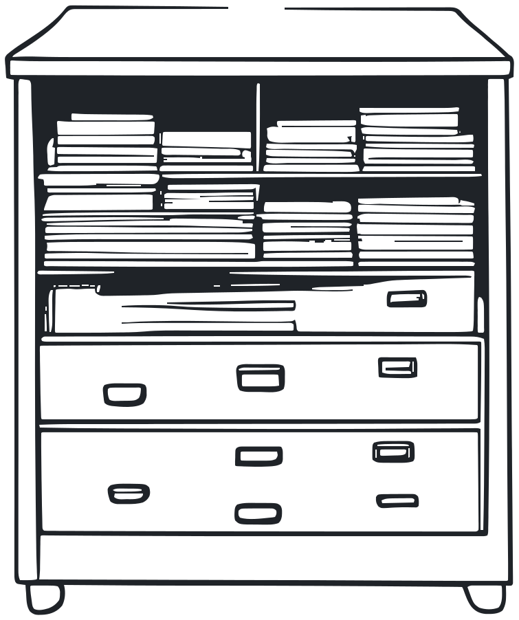

대규모 언어 모델을 위한 검색 증강 생성: 서베이
Retrieval-Augmented Generation for Large Language Models: A Survey
외부 문서를 찾아 답에 덧붙이는 RAG의 발전 단계, 핵심 기술, 평가 방법을 정리한다
대규모 언어 모델은 환각, 낡은 지식, 추적하기 어려운 추론 과정이라는 한계가 있다. 이 서베이는 외부 데이터베이스의 지식을 끌어오는 검색 증강 생성(RAG)을 Naive, Advanced, Modular RAG의 세 단계로 정리하고, retrieval·generation·augmentation 기술과 평가 체계를 살핀 뒤 남은 과제를 제시한다.
서론과 배경
RAG 서베이를 읽기 전에 필요한 지식의 종류, 임베딩, 검색 방식을 정리한다
이 논문을 쓴 이유와 새로운 점논문 1절
대규모 언어 모델(Large Language Model, LLM)은 학습 데이터에 없거나 최신 정보가 필요한 질문에서 환각(Hallucination)을 일으킨다. 검색 증강 생성(Retrieval-Augmented Generation, RAG)은 외부 문서를 찾아 질문과 함께 넣어 이 한계를 줄인다. 이 논문은 빠르게 늘어난 RAG 연구를 한 체계로 정리한 서베이이다.
그림은 두 방식이 같은 query(검색 질의)를 처리하는 과정을 나타낸 것이다.
- 세 패러다임: RAG 연구를 나이브, 어드밴스드, 모듈형 RAG의 세 단계 발전으로 정리한다(2절, 그림 3).
- 세 핵심 기술: 검색, 생성, 증강을 각각 한 절(3~5절)로 나누어 기술별로 분석한다.
- 평가 체계: 26개 과제와 약 50개 데이터셋, 평가 대상·지표·벤치마크·도구를 한데 묶는다(1절, 6절).
이 서베이는 LLM의 환각과 낡은 지식을 외부 검색으로 보완하는 RAG 연구를 세 패러다임, 세 기술, 평가 체계로 정리한다.
이 화면은 논문의 주장이 아니라 논문을 읽기 위해 먼저 알아 둘 배경이다.
parametric knowledge와 non-parametric knowledge
LLM이 학습하는 동안 가중치에 새긴 지식을 parametric knowledge(모델 가중치에 저장된 지식)라 한다. 모델 밖의 문서처럼 필요할 때 찾아 읽는 지식은 non-parametric knowledge(외부 문서에 있는 지식)이다.
그림은 같은 질문에 닫힌 책과 열린 책으로 답하는 과정을 나타낸 것이다. 논문은 RAG를 모델에게 맞춤 교과서를 주는 일에, fine-tuning(미세 조정)을 학생이 지식을 머릿속에 새기는 일에 빗댄다(2.4절). 값은 예시이다.
닫힌 책은 가중치만으로 답해 근거가 없고, 열린 책은 검색한 문서를 읽고 근거와 함께 답한다.
이 화면은 논문의 주장이 아니라 논문을 읽기 위해 먼저 알아 둘 배경이다.
parametric knowledge와 non-parametric knowledge의 비교
그림에서 본 두 방식의 차이를 기준별로 정리하면 다음과 같다. 학습이 끝나면 parametric knowledge는 고정되므로, 새 사실을 반영하려면 다시 학습해야 한다.
그림은 책을 펴 놓고 찾아 읽는 오픈북 시험을 나타낸 것이다. non-parametric knowledge를 쓰는 RAG는 외운 것이 아니라 펼친 책에서 근거를 찾아 답한다.
| 기준 | parametric knowledge | non-parametric knowledge |
|---|---|---|
| 저장 위치 | 모델 가중치 | 모델 밖 문서 모음 |
| 갱신 방법 | 다시 학습해야 함 | 문서만 바꾸면 됨 |
| 근거 제시 | 어렵다 | 문서를 함께 보여 줄 수 있다 |
차이 한 줄 parametric knowledge는 모델 안에 굳어 있어 외워서 답하고, non-parametric knowledge는 모델 밖에 있어 찾아서 답한다.
RAG는 가중치에 고정된 parametric knowledge에 모델 밖 문서라는 바꿀 수 있는 지식을 더한다.
이 화면은 논문의 주장이 아니라 논문을 읽기 위해 먼저 알아 둘 배경이다.
임베딩과 코사인 유사도
임베딩(Embedding)은 글의 뜻을 실수 벡터로 나타낸 것이다. 뜻이 비슷한 글은 비슷한 방향의 벡터가 되므로, 두 벡터 사이의 각이 작을수록 관련이 깊다고 본다. 그림은 query $\boldsymbol{q}=(2,1)$과 문서 $\boldsymbol{d}_1=(1,2)$, $\boldsymbol{d}_2=(3,1)$을 나타낸 것이다.
내적은 같은 자리의 성분끼리 곱해 모두 더한 값이다. 방향이 비슷할수록 커지지만, 벡터가 길기만 해도 커진다.
검색은 query와 문서의 임베딩 사이 코사인 유사도를 구해 값이 큰 문서부터 고르는 일이다.
이 화면은 논문의 주장이 아니라 논문을 읽기 위해 먼저 알아 둘 배경이다.
sparse retrieval과 dense retrieval
sparse retrieval(단어 일치 기반 검색)은 query의 단어가 문서에 얼마나 겹치는지로 점수를 매긴다. dense retrieval(임베딩 벡터 기반 검색)은 query와 문서를 임베딩으로 바꿔 뜻이 가까운 문서를 고른다.
그림은 같은 query와 같은 문서 셋에서 두 방식이 고른 문서를 나타낸 것이다. 점수는 예시 값이다.
sparse retrieval의 대표 방법인 BM25(Best Matching 25)는 "랩톱"처럼 바꿔 쓴 D2를 놓친다. dense retrieval은 뜻이 같은 D2까지 찾는다.
같은 query에서 sparse retrieval은 겹친 단어를 따라가 동의어 문서를 놓치고, dense retrieval은 뜻이 같은 문서를 찾는다.
이 화면은 논문의 주장이 아니라 논문을 읽기 위해 먼저 알아 둘 배경이다.
두 검색의 비교
그림은 같은 query를 두 방식으로 나타낸 벡터를 비교한 것이다.
| 기준 | sparse retrieval | dense retrieval |
|---|---|---|
| 점수 기준 | 단어가 겹친 정도 | 임베딩의 뜻 유사도 |
| 강한 경우 | 고유 명사, 약어, 오류 코드 | 바꿔 쓴 표현, 동의어 |
| 약한 경우 | 동의어를 놓침 | 학습 때 드문 고유 명사를 놓침 |
차이 한 줄 sparse retrieval은 같은 표기를 찾고, dense retrieval은 같은 뜻을 찾으므로 서로의 빈틈을 메운다.
sparse retrieval은 같은 표기에, dense retrieval은 같은 뜻에 강하므로 두 방식은 서로를 보완한다.
이 화면은 논문의 주장이 아니라 논문을 읽기 위해 먼저 알아 둘 배경이다.
탐구 자료지식 지도
그림은 이 단원의 배경 개념이 RAG로 모이는 관계를 나타낸 것이다. 왼쪽 갈래는 RAG가 보완할 한계이고, 가운데 갈래는 RAG의 검색 단계이다.
RAG는 LLM의 한계를 query 임베딩과 외부 문서 검색으로 메운다.
확인 문제지식과 유사도
1그림은 query 임베딩 $\boldsymbol{q}$와 문서 임베딩 A, B, C를 나타낸 것이다. 코사인 유사도로 상위 1개를 검색할 때 선택되는 문서는?
2다음은 parametric knowledge(P)와 non-parametric knowledge(N)에 대한 설명이다. 옳지 않은 것은?
코사인 유사도는 벡터의 방향만 비교하고, parametric knowledge는 다시 학습해야 바뀐다.
확인 문제검색 방식과 환각
3sparse·dense retrieval 설명으로 옳은 것만을 <보기>에서 있는 대로 고른 것은?
ㄱ. sparse retrieval은 드문 고유 명사에 강하다.
ㄴ. sparse 벡터는 짧고 모든 칸에 실수 값이 있다.
ㄷ. dense retrieval은 바꿔 쓴 표현도 찾는다.
4학습이 끝난 뒤의 사건을 LLM에 검색 없이 물을 때 나타날 결과로 가장 타당한 것은?
sparse retrieval은 같은 표기에, dense retrieval은 같은 뜻에 강하고, LLM 단독 생성은 학습 이후의 사실에서 환각 위험이 크다.
RAG 개요
RAG의 전체 구조와 세 가지 발전 단계, 다른 최적화 방법과의 차이를 살핀다
RAG의 전체 구조논문 2절
RAG 시스템은 문서를 미리 준비하는 오프라인 단계와 질문을 받아 답하는 온라인 단계로 나뉜다. 오프라인에서는 문서를 청크(Chunk)로 자르고 임베딩해 벡터 데이터베이스(Vector Database)에 넣으며, 이 준비 과정을 indexing(색인 구축)이라 한다.
온라인에서는 retriever(검색기)가 청크를 찾고, generator(생성기)인 LLM이 답을 만든다. 그림은 이 흐름과 상자별 값(예시)을 나타낸 것이다. 교과 색 칸은 질문과 청크를 하나로 묶는 증강 단계이다.
출처: 논문 그림 2, LangChain RAG 튜토리얼(Load-Split-Store, Retrieve-Generate)(https://docs.langchain.com/oss/python/langchain/rag)을 참고해 다시 그림.
RAG는 문서를 청크로 잘라 vector database에 넣어 두고, 질문이 오면 가까운 청크를 찾아 프롬프트에 붙여 LLM이 답하게 한다.
Naive RAG의 세 단계: 질문 하나 따라가기논문 2.1절
가장 단순한 형태인 Naive RAG는 앞의 구조도를 한 번씩 거친다. 스페이스바로 한 줄씩 넘기시오.
D는 사내 규정 120건, q는 "신입 사원의 연차는 며칠인가?", k는 3이다(예시).
[indexing] 512토큰씩 자르면 청크 1,840개이다. c17은 "제12조 ① 입사 1년 미만은 매월 1일…"이다.
청크 1,840개를 768차원 벡터로 바꿔 vector database에 저장한다.
[retrieval] indexing 때와 같은 embedding model로 q를 768차원 벡터 v로 바꾼다.
v와 cosine similarity가 큰 순서로 c17(0.89), c18(0.84), c52(0.41)을 고른다.
[generation] q와 청크 3개를 한 프롬프트로 묶는다(약 620토큰).
LLM이 "1년 미만은 매월 1일, 이상은 연 15일(제12조)"이라고 답한다.
Naive RAG는 문서를 청크로 잘라 저장하고, 질문과 가까운 청크 k개를 찾아 프롬프트에 넣어 답을 만든다.
탐구 자료Naive RAG의 한계논문 2.1절
그림은 논문이 꼽은 Naive RAG의 한계를 단계별로 나타낸 것이다. 검색 단계에서는 무관한 청크가 섞이고, 생성 단계에서는 검색 내용과 맞지 않거나 검색 내용을 되풀이하기만 하는 답이 나온다.
세 문제는 단계마다 따로 생기지만 서로 이어진다. 검색이 무관한 청크를 가져오면 생성 단계가 그 청크를 근거로 환각을 만들 수 있으므로, 뒤의 두 패러다임은 주로 검색 품질부터 고친다고 해석할 수 있다.
Naive RAG는 검색의 정밀도·재현율, 생성의 faithfulness, 여러 청크를 잇는 증강에서 모두 한계를 보인다.
Naive, Advanced, Modular RAG 비교논문 2절
Advanced RAG는 사슬을 두고 앞뒤를 다듬고, Modular RAG는 단계 자체를 모듈로 갈아 끼운다. 그림은 세 방식을 같은 단계 축에 놓은 것이다.
| 기준 | Naive RAG | Advanced RAG | Modular RAG |
|---|---|---|---|
| 검색 전 | 없음 | indexing 최적화(슬라이딩 윈도, 메타데이터), query rewriting | 모듈로 더하거나 교체 |
| 검색 후 | 없음 | reranking, context compression | 모듈로 더하거나 교체 |
| 흐름 | 한 방향 사슬 | 한 방향 사슬 | 순서 변경, 반복, 분기 |
차이 한 줄 Naive RAG는 검색 → 생성뿐, Advanced RAG는 앞뒤를 다듬고, Modular RAG는 단계와 순서를 바꾼다.
Advanced RAG는 사슬을 지키며 검색 앞뒤를 다듬고, Modular RAG는 모듈의 종류와 순서까지 바꾼다.
Modular RAG의 패턴논문 2.3절
Modular RAG는 기능 모듈을 더하거나 갈아 끼울 수 있게 한다. 논문은 새 모듈로 Search, RAG-Fusion, Memory, Routing, Predict, Task Adapter의 6가지를 든다.
그림은 모듈의 순서를 바꾼 대표 패턴을 나타낸 것이다. 교과 색 칸이 Naive RAG에 새로 끼우거나 바꾼 모듈이다.
Naive RAG의 Retrieve-Read도 모듈 두 개를 고정 순서로 이은 경우이므로, 앞의 두 패러다임은 Modular RAG의 특수한 경우로 해석할 수 있다.
Modular RAG는 모듈의 종류와 순서를 바꿔 Rewrite, Generate, 반복 Retrieve 같은 새 흐름을 만든다.
탐구 자료RAG, fine-tuning, 프롬프트 엔지니어링논문 2.4절
논문은 모델 최적화 방법을 외부 지식 필요도와 모델 적응 필요도의 두 축으로 비교한다. 그림은 그 비교를 나타낸 것이다.
모델은 두고 지시와 예시만 다듬는다. 가장 싸다.
문서만 바꿔 실시간으로 갱신하고 근거를 보여 준다. 검색 때문에 응답이 늦고 데이터 검색의 윤리 문제가 따른다.
말투와 형식까지 깊게 맞추지만 갱신하려면 다시 학습해야 하고 계산 비용이 크다.
기존·새 지식 모두에서 RAG가 비지도 fine-tuning보다 나았다는 연구를 든다.
논문은 두 방법이 서로 배타적이지 않으며 함께 쓰려면 여러 번 조정해야 할 수 있다고 본다.
RAG는 외부 지식을, fine-tuning은 모델 적응을 맡으며 둘은 함께 쓸 수 있다.
세 방법의 비교논문 2.4절
그림은 규정이 개정된 같은 상황에서 세 방법이 바꾸는 곳을 나타낸 것이다. 앞의 둘은 프롬프트를, fine-tuning은 모델 가중치를 바꾼다.
| 방법 | 언제 쓰나 | 지식 갱신 | 비용 | 약점 |
|---|---|---|---|---|
| 프롬프트 엔지니어링 | 지시·말투를 빠르게 바꿀 때 | 프롬프트에 직접 써 넣음 | 가장 낮음 | 입력 길이 한도 |
| RAG | 자주 바뀌는 지식에 근거가 필요할 때 | 문서만 교체 | 검색 구축·운영, 응답 지연 | 검색이 틀리면 답도 틀림 |
| fine-tuning | 말투·형식을 모델에 깊게 맞출 때 | 다시 학습 | 학습 계산 비용이 큼 | 근거 제시가 어려움 |
차이 한 줄 프롬프트 엔지니어링은 지시를 바꾸고, RAG는 모델 밖 지식을 바꾸며, fine-tuning은 모델 안 가중치를 바꾼다.
지식이 자주 바뀌고 근거가 필요하면 RAG를, 모델의 말투와 형식을 깊게 맞추려면 fine-tuning을 쓴다.
탐구 자료연구 계보논문 1절, 2절
dense retriever와 생성 모델을 잇는 Retrieve-Read 구조를 이어받음. → LLM 시대의 추론 단계 RAG까지 같은 틀로 묶음.
query와 문서를 따로 임베딩하는 dense retrieval을 이어받음. → 임베딩 fine-tuning 같은 retriever 개선을 한 절로 정리.
Retrieve-Read 순서를 이어받음. → 앞에 재작성 모듈을 끼워 순서 자체를 바꿈.
검색 결과를 읽어 답하는 흐름을 이어받음. → 검색할지 말지를 모델이 스스로 정함.
세 패러다임은 RAG와 DPR의 Retrieve-Read 구조를 이어받고, rewriting과 adaptive retrieval로 순서와 시점을 바꿔 왔다.
확인 문제세 패러다임
1다음 중 Advanced RAG의 검색 전 최적화로 옳지 않은 것은?
2다음 중 Modular RAG의 Generate-Read 패턴에 대한 설명으로 옳은 것은?
reranking은 검색 후 최적화이고, Generate-Read는 Retrieve 모듈을 Generate 모듈로 바꾼 패턴이다.
확인 문제RAG와 fine-tuning
3매일 바뀌는 사내 규정을 근거 조항과 함께 답해야 할 때 가장 알맞은 선택은?
4RAG와 fine-tuning에 대한 설명으로 옳은 것만을 <보기>에서 있는 대로 고른 것은?
ㄱ. 두 방법은 함께 쓸 수 있다.
ㄴ. RAG는 검색 탓에 응답이 늦을 수 있다.
ㄷ. fine-tuning은 갱신하려면 재학습해야 한다.
자주 바뀌고 근거가 필요한 지식은 RAG가 맡고, fine-tuning과 함께 쓸 수도 있다.
검색
무엇을, 어떤 단위로 색인하고 query를 다듬어 찾을지 정리한다
검색 원천과 검색 단위논문 3.1절
검색 원천은 가장 널리 쓰는 비정형 텍스트(위키백과 덤프 등), 표가 섞인 PDF 같은 반정형 데이터, 지식 그래프(Knowledge Graph, KG) 같은 정형 데이터, 대규모 언어 모델(Large Language Model, LLM)이 만든 콘텐츠로 나뉜다. 반정형 데이터는 chunking할 때 표가 잘리고, 정형 데이터는 정확하지만 구축과 유지에 품이 든다.
그림은 텍스트 검색 단위를 세밀한 것부터 거친 것까지 늘어놓은 것이다. 논문은 원자적이고 자기 완결적인 사실 표현인 명제를 단위로 삼은 DenseX를 소개한다.
지식 그래프에서는 개체, 세 쌍(Triplet), 하위 그래프가 단위가 된다. 논문은 추론 시점에 단위를 고르는 것만으로도 dense retrieval(임베딩 벡터 기반 검색) 성능을 개선할 수 있다는 연구를 든다.
검색 단위가 세밀하면 뜻이 잘리고 거칠면 군더더기가 늘므로, 원천과 과제에 맞는 단위를 골라야 한다.
chunking: 같은 문서, 세 가지 자르기논문 3.2절
chunking은 문서를 검색 단위인 청크(Chunk)로 자르는 일이다. 논문은 100, 256, 512 토큰 같은 고정 길이를 예로 든다. 그림은 같은 문서를 세 방식으로 자르고 같은 query로 찾은 결과이다.
| 기준 | fixed-size | sentence | Small2Big |
|---|---|---|---|
| 자르는 기준 | 토큰 수. 겹치면 슬라이딩 윈도 | 문장 끝 | 작게 찾고 앞뒤를 붙임 |
| 약점 | 문장이 잘림 | 앞뒤 문맥이 없음 | 부모-자식 연결 저장, 입력 증가 |
차이 한 줄fixed-size는 길이로, sentence는 문장으로 자르고, Small2Big은 찾는 단위와 읽는 단위를 분리한다.
청크 크기는 문맥과 잡음 사이의 맞바꿈이며, Small2Big은 작게 찾고 크게 읽어 둘을 함께 얻는다.
메타데이터와 구조 인덱스논문 3.2절
청크에 쪽 번호, 파일 이름, 저자, 분류, 작성 시각 같은 메타데이터(Metadata)를 붙이면 indexing(색인 구축)할 때 검색 범위를 걸러 낼 수 있다. 작성 시각에 가중치를 주면 최신 지식을 앞세울 수 있다.
문서가 답할 수 있는 질문을 LLM이 미리 만들어 붙이는 방법을 논문은 Reverse HyDE(역방향 HyDE)라 부른다. 사용자 query를 이 가상 질문과 비교해 질문과 답 사이의 의미 차이를 줄인다.
그림은 서류를 칸마다 나누어 넣은 캐비닛을 나타낸 것이다. 구조 인덱스도 문서를 이렇게 칸과 층으로 나누어 둔다.

그림은 계층 인덱스의 부모-자식 구조를 나타낸 것이다. 노드마다 요약이 있어 위에서부터 빠르게 훑어 내려갈 수 있다.
메타데이터는 검색 범위를 거르고, 계층 인덱스와 지식 그래프 인덱스는 문서 구조를 따라 찾게 한다.
query 최적화: 같은 query, 네 가지 변형논문 3.3절
사용자의 query는 모호하거나 엉성할 수 있다. 논문은 “LLM”이 대규모 언어 모델과 법학 석사(Master of Laws)를 모두 뜻할 수 있다는 예를 든다.
그림은 한 query를 query rewriting(질의 재작성), query expansion(질의 확장), HyDE, query routing(질의 경로 선택)이 어떻게 바꾸는지 보인 것이다.
같은 query도 고쳐 쓰고, 늘리고, 가상 답변으로 바꾸고, 보낼 곳을 고르면 검색에 들어가는 내용이 달라진다.
query 최적화 네 방식의 비교논문 3.3절
논문은 query 최적화를 query transformation(질의 변환), query expansion, query routing으로 나누고, expansion에는 Multi-Query·Sub-Query·CoVe, transformation에는 rewriting(RRR, BEQUE)·HyDE·Step-back, routing에는 메타데이터·의미·hybrid router를 든다. 표는 앞 쪽 그림의 네 방식을 기준별로 견준 것이다.
| 기준 | query rewriting | query expansion | HyDE | query routing |
|---|---|---|---|---|
| 바꾸는 것 | query 한 문장을 명확하게 고쳐 씀 | query를 여러 개로 늘리거나 쪼갬 | query 대신 가상 답변을 씀 | query를 보낼 곳을 고름 |
| 검색 횟수 | 1회 | query 수만큼 | 1회(LLM 호출 1회 추가) | 고른 곳에 1회 |
| 잘 듣는 상황 | 구어체·모호한 query | 여러 측면이 섞인 질문 | query와 문서의 어휘가 다를 때 | 원천이 여럿일 때 |
| 약점 | 의도를 잘못 바꿀 수 있음 | 중복 결과와 비용 증가 | 가상 답변이 틀리면 엉뚱한 곳을 찾음 | 경로를 잘못 고르면 답이 없음 |
차이 한 줄query rewriting은 query를 고쳐 쓰고, query expansion은 늘리거나 쪼개며, HyDE는 query를 답으로 바꿔 찾고, query routing은 어디서 찾을지 고른다.
query 최적화는 질문을 고치고, 늘리고, 가상 답변으로 바꾸고, 알맞은 원천으로 보내 검색을 돕는다.
탐구 자료임베딩과 retriever 선택논문 3.4~3.5절
논문은 임베딩 리더보드로 MTEB(과제 8개, 데이터셋 58개)와 중국어용 C-MTEB(6개, 35개)를 소개하며, 모든 경우에 맞는 모델은 없다고 본다. 표는 sparse retrieval(단어 일치 기반 검색), dense retrieval, hybrid retrieval(sparse와 dense를 섞은 검색), fine-tuning(미세 조정)한 임베딩, adapter(작은 추가 모듈)를 견준 것이다.
| 방식 | 무엇으로 찾나 | 잘 맞는 query 예 | 약점·비용 |
|---|---|---|---|
| sparse retrieval | 단어 일치(BM25) | "오류 E-4021 원인"처럼 드문 단어 | 동의어, 표현 차이에 약함 |
| dense retrieval | 임베딩 벡터의 유사도 | "차가 안 나가요"처럼 뜻은 같고 표현이 다른 query | 드문 개체·새 용어에 약함 |
| hybrid retrieval | 두 점수를 합침 | 두 유형이 섞인 query. 드문 개체가 든 query에 강함 | index 둘을 유지하고 가중치를 조정 |
| fine-tuned embedding | 분야 말뭉치로 임베딩 모델을 추가 학습 | 의료·법률처럼 사전 학습과 다른 분야 | 학습 데이터와 비용. REPLUG는 LLM 출력으로 retriever를 학습 |
| adapter | retriever와 LLM은 고정, 사이의 작은 모듈만 학습 | 닫힌 API의 LLM(UPRISE, BGM, PRCA) | 간접적 개선, 모듈 설계가 필요 |
차이 한 줄sparse는 단어를, dense는 뜻을 맞추고, hybrid는 둘을 섞으며, fine-tuning과 adapter는 retriever나 둘 사이를 학습해 맞춘다.
MTEB는 과제 8개·데이터셋 58개로 임베딩을 평가하지만, 분야마다 hybrid retrieval과 fine-tuning, adapter로 맞춰야 한다.
확인 문제indexing과 chunking
1청크 크기를 512 토큰에서 100 토큰으로 줄일 때 예상되는 결과로 가장 타당한 것은?
2다음 중 Reverse HyDE에 대한 설명으로 옳은 것은?
작은 청크는 잡음을 줄이지만 문맥을 잃고, Reverse HyDE는 질문과 질문을 비교해 의미 차이를 줄인다.
확인 문제query와 retriever
3다음 중 논문이 분류한 query expansion 방법으로 옳지 않은 것은?
4닫힌 API의 LLM에 retriever를 맞추는 방법으로 옳은 것만을 <보기>에서 있는 대로 고른 것은?
ㄱ. 둘 사이에 다리 모델을 둔다.
ㄴ. LLM의 가중치를 fine-tuning한다.
ㄷ. 가벼운 프롬프트 retriever를 학습한다.
Step-back은 query transformation이고, 닫힌 LLM은 adapter로 retriever와 맞춘다.
생성과 증강
검색한 내용을 다듬어 LLM에 넘기는 방법과, 검색과 생성을 여러 번 엮는 증강 과정을 살핀다
Lost in the Middle과 문맥 길이논문 4.1절
retriever가 가져온 청크를 모두 LLM에 넣으면 중복된 정보가 답을 흐리고, 문맥이 길면 Lost in the Middle(긴 입력 가운데 정보를 놓치는 현상)이 생긴다.
Liu 등(2023)은 여러 문서에서 답을 찾는 질의응답과 key-value 검색 실험에서, 답이 든 문서가 입력의 처음이나 끝에 있을 때 성능이 가장 높고 가운데에 있을 때 떨어짐을 보였다. 이 경향은 긴 문맥을 겨냥해 만든 모델에서도 나타났다.
LLM은 긴 문맥의 가운데를 놓치기 쉬우므로, 중요한 청크를 앞뒤에 두거나 문맥을 줄인다.
reranking과 context compression논문 4.1절
reranking은 top-$k$(상위 $k$개) 청크의 순서를 바꾸고, context compression은 청크의 길이를 줄인다.
| 기준 | reranking | context compression |
|---|---|---|
| 역할 | top-k 청크의 순서를 다시 매김 | 청크의 길이를 줄여 잡음을 덜어 냄 |
| 입출력 | 청크 5개 → 같은 5개, 새 순서 | 청크 5개 → 더 짧은 글(개수도 줄 수 있음) |
| 방법 | 규칙 기반(다양성, MRR), 모델 기반(SpanBERT, Cohere rerank, bge-reranker-large, GPT) | LongLLMLingua(작은 모델로 토큰 삭제), RECOMP(양성 1개·음성 5개로 학습한 압축기), Filter-Reranker |
| 약점 | 개수는 그대로라 입력 길이 부담이 남음 | 중요한 정보까지 지울 위험 |
차이 한 줄reranking은 목록의 순서를 바꾸고, context compression은 목록의 길이를 줄인다.
reranking은 중요한 청크를 앞에 세우고, context compression은 잡음을 덜어 LLM이 핵심에 집중하게 한다.
탐구 자료LLM fine-tuning논문 4.2절
generator(생성기)를 분야 데이터로 fine-tuning(미세 조정)하면 분야 지식을 더하고 입출력 형식과 말투를 맞출 수 있다. 논문은 강화 학습으로 사람이나 retriever의 선호에 출력을 맞추는 방법, GPT-4 같은 강한 모델을 증류하는 방법, RA-DIT처럼 KL 발산으로 retriever와 generator의 점수 함수를 맞추는 방법을 든다.
다음 대화는 이 내용을 두고 학생과 교사가 나눈 것이다. 다음 메시지 버튼으로 대화를 넘기시오.
두 사람의 대화는 RAG의 품질이 retriever와 generator 양쪽의 맞춤에 달려 있음을 보여 준다.
generator fine-tuning은 분야 지식과 형식을 더하고, retriever와 점수 함수를 맞추는 데까지 쓰인다.
증강 과정: 같은 질문, 세 가지 검색 시점논문 5절, 그림 5
그림은 같은 multi-hop(여러 문서를 건너 추론) 질문에서 세 방식이 검색하는 시점이다.
| 기준 | iterative | recursive | adaptive |
|---|---|---|---|
| 시점 | 정해진 횟수만큼 번갈아 | 앞 결과를 본 뒤마다 | 모델이 필요하다고 판단할 때 |
| 입력 | 원래 query + 생성한 글 | 앞 결과로 고친 query | 생성 중인 문장 |
| 횟수 | 2회 | 2회 | 1회 |
| 약점 | ITER-RETGEN. 의미가 끊기고 무관한 정보가 쌓일 수 있음 | IRCoT, ToC. 단계가 깊어질수록 느려짐 | FLARE, Self-RAG. 판단이 틀리면 필요한 검색을 놓침 |
차이 한 줄iterative는 정해진 때마다, recursive는 query를 고쳐 가며, adaptive는 모델이 필요하다고 판단할 때만 검색한다.
iterative는 검색과 생성을 번갈아, recursive는 query를 고쳐 가며, adaptive는 필요할 때만 검색한다.
adaptive retrieval: FLARE와 Self-RAG논문 5.3절
FLARE와 Self-RAG는 모두 필요할 때만 검색하지만 검색을 일으키는 신호가 다르다. Self-RAG는 retrieve와 critic 두 종류의 reflection token(스스로 평가하는 특수 토큰)을 생성해 검색 시점과 답의 품질을 스스로 판단하며, 별도의 분류기가 필요 없다. 그림은 같은 문장을 쓰는 중에 각 방식이 검색하는 시점이다.
| 기준 | FLARE | Self-RAG |
|---|---|---|
| 신호 | 생성 토큰의 확률이 문턱값 θ보다 낮음(밖의 규칙이 읽음) | 모델이 낸 reflection token([Retrieve])(모델 자신이 말함) |
| 학습 | 필요 없음 | reflection token을 내도록 학습 |
| 확인 | 없음(다시 생성) | 비평 토큰으로 문서와 답을 평가 |
차이 한 줄FLARE는 모델이 얼마나 자신 있는지를 밖에서 재어 검색하고, Self-RAG는 모델이 reflection token으로 검색이 필요하다고 직접 말한다.
FLARE는 토큰 확률이 문턱값보다 낮을 때, Self-RAG는 reflection token으로 검색 시점을 정한다.
FLARE의 판단 과정논문 5.3절
FLARE는 생성 중인 토큰의 확률을 자신감으로 보고, 확률이 문턱값 $\theta$보다 낮으면 검색한다. 그림은 이 판단을 나타낸 것이다.
다음 문장을 미리 생성해 본다.
문장 속 토큰 확률 가운데 가장 낮은 값을 본다.
문턱값보다 낮으면 자신이 없다고 본다.
그 문장으로 검색해 다시 생성한다.
모은 문장을 답으로 낸다.
Self-RAG는 이 판단을 확률 대신 모델이 내는 reflection token으로 대신한다.
FLARE는 문장 속 가장 낮은 토큰 확률이 문턱값보다 낮을 때만 검색하고 그 문장을 다시 생성한다.
확인 문제문맥 정리
1청크 10개를 프롬프트에 넣을 때 Lost in the Middle을 줄이는 배치로 가장 타당한 것은?
2다음 중 context compression 방법에 대한 설명으로 옳지 않은 것은?
핵심 청크는 문맥의 앞뒤에 두고, 압축은 LLM을 다시 학습하지 않고도 할 수 있다.
확인 문제증강 과정
3FLARE에서 문턱값이 0.5이고 여섯 토큰의 확률이 0.92, 0.88, 0.35, 0.90, 0.28, 0.85일 때 검색이 일어나는 횟수는?
4recursive retrieval에 해당하는 것만을 <보기>에서 있는 대로 고른 것은?
ㄱ. 생성한 글을 붙여 정해진 횟수만큼 검색한다.
ㄴ. 명확화 나무로 모호한 query를 고쳐 간다.
ㄷ. 토큰 확률이 낮을 때만 검색한다.
FLARE는 문턱값보다 낮은 토큰에서만 검색하고, recursive retrieval은 query를 고쳐 가며 다시 찾는다.
과제와 평가
RAG를 어떤 과제로 시험하고, 무엇을 어떤 지표와 도구로 재는지 정리한다
탐구 자료하위 과제와 데이터셋논문 6.1절, 표 2
논문은 RAG 평가를 26개 과제와 약 50개 데이터셋으로 정리한다. 자료는 논문 표 2의 행을 과제 묶음별로 센 것이며, 데이터셋은 모두 48개이다.
과제 묶음별 규모(논문 표 2를 센 값)
질의응답이 48개 가운데 21개로 가장 많아, 평가가 질의응답 쪽에 치우쳐 있다고 해석할 수 있다.
RAG 평가 데이터셋 48개 가운데 21개가 질의응답이어서, 평가는 질의응답 중심이다.
평가 대상과 질 점수논문 6.2절, 6.3절
평가 대상은 검색 품질과 생성 품질이다. 질 점수 3개는 RAG 흐름의 세 지점인 query, context, answer를 둘씩 짝지어 하나씩 잰다. TruLens는 이 세 쌍을 RAG triad라 부르고, faithfulness를 groundedness라고도 한다.
context relevance(검색 문맥의 관련성)는 retriever의 몫이다. faithfulness(답이 문맥에 충실한 정도)는 문맥에 없는 말을 지어냈는지를 보고, answer relevance(답이 질문에 맞는 정도)는 동문서답인지를 본다.
context relevance는 query와 context, faithfulness는 context와 answer, answer relevance는 query와 answer 사이를 잰다.
필요 능력 4개논문 6.2절, 6.3절
질 점수 외에 RAG가 갖춰야 할 능력 4개가 있다. noise robustness(잡음 문서에 대한 강건성), negative rejection(답이 없으면 답하지 않기), information integration(여러 문서 정보 통합), counterfactual robustness(틀린 문서에 속지 않기)이다.
| 능력 | 검색 문서 상황과 query(예시) | 좋은 답 | 나쁜 답 |
|---|---|---|---|
| noise robustness | 관련은 있으나 답 없는 문서 여러 개와 정답 문서 하나. “2022년 노벨 문학상 수상자는?” | 정답 문서를 골라 “아니 에르노” | 잡음 문서에 나온 다른 이름을 답함 |
| negative rejection | 답이 든 문서가 하나도 없음. “2030년 월드컵 우승국은?” | “제공된 문서로는 알 수 없다” | 그럴듯한 나라를 지어내 답함 |
| information integration | 답의 재료가 두 문서에 나뉨. “에펠탑(330m)과 롯데월드타워(555m)의 높이 차는?” | 두 문서를 합쳐 “약 225m” | 한 문서만 쓰고 “330m”라고 답함 |
| counterfactual robustness | 문서에 틀린 사실이 있음. “물은 1기압에서 몇 도에 끓나?”(문서는 “90℃”) | “100℃이며, 문서 내용이 사실과 다르다” | 문서를 믿고 “90℃”라고 답함 |
차이 한 줄 네 능력은 검색 문서의 상태로 갈린다. 잡음이 섞이면 noise robustness, 답이 없으면 negative rejection, 답이 흩어져 있으면 information integration, 답이 틀렸으면 counterfactual robustness이다.
네 능력은 잡음, 답 없음, 흩어진 답, 틀린 문서라는 검색 문서의 상태로 갈리며, context relevance와 noise robustness는 주로 검색을 잰다.
탐구 자료측면별 지표논문 6.3절, 표 3
그림은 논문 표 3에서 지표 11개가 측면 7개 가운데 어디에 쓰이는지를 점으로 나타낸 것이다.
Accuracy만 7개 측면 모두에 쓰이고, Hit Rate·MRR·NDCG 같은 정보 검색 지표는 context relevance에만 쓰인다. 논문은 이 지표들이 전통적인 측정일 뿐 RAG 평가를 위한 성숙하고 표준화된 방법은 아직 아니라고 밝힌다.
RAG 평가는 아직 전통 지표를 빌려 쓰며, 측면마다 맞는 지표가 다르다.
탐구 자료평가 틀논문 6.4절, 표 4
평가 틀은 정해진 문제를 푸는 벤치마크(Benchmark)와 시스템에 점수를 매기는 자동 평가 도구로 나뉜다.
| 이름 | 종류 | 평가 대상 | 평가 측면 | 정량 지표 |
|---|---|---|---|---|
| RGB | 벤치마크 | 검색·생성 | noise robustness, negative rejection, information integration, counterfactual robustness | Accuracy, EM |
| RECALL | 벤치마크 | 생성 | counterfactual robustness | R-Rate |
| CRUD | 벤치마크 | 검색·생성 | 창작 생성, 지식 집약 QA, 오류 수정, 요약 | BLEU, ROUGE-L, BertScore, RAGQuestEval |
| RAGAS | 도구 | 검색·생성 | context relevance, faithfulness, answer relevance | 맞춤 지표, Cosine Similarity |
| ARES | 도구 | 검색·생성 | context relevance, faithfulness, answer relevance | Accuracy |
| TruLens | 도구 | 검색·생성 | context relevance, faithfulness, answer relevance | 맞춤 지표 |
차이 한 줄 벤치마크(RGB·RECALL·CRUD)는 정해진 문제로 능력이나 과제별 점수를 재고, 도구(RAGAS·ARES·TruLens)는 RAG 시스템에 context relevance·faithfulness·answer relevance 점수를 매긴다.
RGB·RECALL·CRUD는 능력과 과제별 점수를, RAGAS·ARES·TruLens는 질 점수를 재며 지표가 서로 다르다.
확인 문제측면과 지표
1검색한 문서에 질문의 답이 없을 때 “제공된 문서로는 답할 수 없다”고 답하는 능력은?
2논문 표 3에서 context relevance을 재는 지표로 옳지 않은 것은?
답을 삼가는 능력은 negative rejection이고, R-Rate는 counterfactual robustness 지표이다.
확인 문제과제와 평가 틀
3표 2의 과제 묶음별 데이터셋 수에 대한 해석으로 옳지 않은 것은?
4표 4의 평가 틀에 대한 설명으로 옳은 것만을 <보기>에서 있는 대로 고른 것은?
ㄱ. RGB는 필요 능력 4개를 잰다.
ㄴ. RECALL은 검색 품질도 잰다.
ㄷ. RAGAS는 질 점수 3개를 잰다.
데이터셋의 수는 성능이 아니라 평가의 치우침을 보여 주며, 평가 틀마다 재는 측면이 다르다.
논의와 향후 전망
long context LLM 시대에도 RAG가 필요한 까닭과 남은 과제, 그리고 서베이의 의의를 정리한다
long context와 RAG논문 7.1절
요즘 LLM은 20만 토큰이 넘는 long context(긴 입력 문맥)도 다룬다. 문서를 통째로 넣으면 되지 않을까? 논문은 그래도 RAG가 필요하다고 본다.
long context는 문서 전체를, RAG는 고른 chunk만 입력하여 RAG는 비용·지연이 작고 근거를 확인할 수 있다.
long context와 RAG의 비교논문 7.1절
Li et al.(2024)은 자원이 충분하면 long context가 평균 성능에서 앞서지만 RAG의 비용이 훨씬 낮다고 보고했다. query에 따라 둘 중 하나를 고르는 Self-Route로 비용을 크게 줄이면서 성능을 비슷하게 유지했다고 한다.
| 기준 | long context | RAG |
|---|---|---|
| LLM 입력 | 문서 전체 | retriever가 고른 chunk 몇 개 |
| 비용·지연 | 입력 길이에 따라 커짐 | 입력이 짧아 작음 |
| 정확도 | 자원이 충분하면 평균 성능이 높다는 보고 | retrieval이 놓친 정보는 답에 반영되지 않음 |
| 근거 확인 | 어느 부분을 썼는지 추적 어려움 | 참조한 chunk를 보여 줄 수 있음 |
차이 한 줄 long context는 모델이 알아서 찾도록 전부 넣고, RAG는 넣을 부분을 미리 골라 입력을 줄이는 대신 고르기에 실패할 위험을 진다.
long context는 평균 성능이, RAG는 비용과 근거 확인이 강점이며 query마다 고르는 절충도 있다.
입력에 섞인 문서와 강건성논문 7.2절
강건성도 과제이다. 반사실 정보가 섞이면 답의 질이 떨어지지만, 한 연구는 관련 없는 문서를 넣었더니 정확도가 오히려 30% 넘게 오른 결과를 보고했다.
논문은 이 반직관적 결과를 검색과 생성을 잇는 더 나은 방법이 필요하다는 신호로 읽는다. 어떤 문서가 도움이 되는지는 사람이 보는 관련성만으로 정해지지 않는다고 해석할 수 있다.
반사실 문서는 답을 해치지만 관련 없는 문서는 정확도를 30% 넘게 올렸다는 보고가 있어, 검색과 생성의 연결이 아직 숙제이다.
하이브리드논문 7.3절
하이브리드는 RAG와 fine-tuning(미세 조정)을 함께 쓰는 방향이다. CRAG처럼 가벼운 검색 평가기를 두어 검색 문서의 질을 판단하는 시도도 있다.
| 기준 | RAG | fine-tuning | hybrid |
|---|---|---|---|
| 새 지식 반영 | 문서만 바꾸면 됨 | 다시 학습해야 함 | 지식은 문서로, 형식은 학습으로 |
| 강점 | 근거 확인 | 말투·형식·도메인 용어 | 근거를 갖춘 답을 원하는 형식으로 |
| 약점 | 검색 실패, 긴 입력 | 학습 비용, 갱신 어려움 | 두 비용을 함께 짐 |
차이 한 줄 RAG는 질문마다 입력을 바꾸고, fine-tuning은 가중치를 한 번 바꾸며, hybrid는 둘을 함께 쓴다.
RAG는 입력을, fine-tuning은 가중치를 바꾸며, hybrid는 둘을 합쳐 쓴다.
scaling law, 실서비스, 생태계논문 7.4절, 7.5절, 그림 6
RETRO++처럼 매개변수를 늘리는 시도가 있지만, RAG에서 scaling law가 성립하는지는 아직 불확실하며 작은 모델이 큰 모델을 앞서는 역규모 법칙의 가능성도 남아 있다.
검색 효율, 큰 지식 베이스에서의 재현율, 문서 출처나 메타데이터가 새지 않게 하는 데이터 보안이 과제이다.
실서비스 도구로는 LangChain과 LlamaIndex가 대표적이며, Flowise AI, HayStack, Meltano, Cohere Coral 같은 도구도 등장했다. 논문은 RAG 도구의 흐름을 맞춤화, 단순화, 전문화의 세 방향으로 정리한다.
그림은 논문이 정리한 RAG 생태계를 줄여 나타낸 것이다.
RAG의 scaling law와 실서비스 보안은 열린 과제이며, 도구는 맞춤화·단순화·전문화로 나아간다.
멀티모달 RAG논문 7.6절
RAG는 글을 넘어 멀티모달(Multimodal) 자료로 넓어지고 있다. 이미지에서는 RA-CM3과 BLIP-2, 소리와 영상에서는 GSS와 Vid2Seq, 코드에서는 RBPS가 그 예이다. 구조화 지식에서는 CoK가 지식 그래프의 사실을 검색해 쓴다.
검색 대상이 바뀌어도 query를 받아 관련 자료를 찾아 generator에 넣는 흐름은 같다고 볼 수 있다.
RAG는 이미지·소리·코드·지식 그래프로 넓어지며, 검색 대상만 바뀌고 흐름은 같다.
의의와 한계논문 8절
논문은 결론에서 RAG를 Naive RAG, Advanced RAG, Modular RAG의 세 패러다임으로 정리하고, 검색·생성·증강의 핵심 기술과 평가 틀을 묶어 냈다고 밝힌다. 이 정리는 흩어진 연구를 한 지도에 놓았다는 점에서 의의가 크다고 볼 수 있다.
다음 결론에 숨어 있는 가정으로 가장 적절한 것을 고르시오.
이 서베이는 RAG 연구를 한 지도로 묶었지만, 방법 사이의 우열은 원 논문의 실험에 기댄다.
확인 문제남은 과제
1long context LLM이 있어도 RAG가 필요한 까닭으로 가장 적절한 것은?
2매달 바뀌는 사내 규정에 답하고 근거 조항도 보여 주는 챗봇을 만들 때 가장 알맞은 방법은?
RAG의 강점은 근거 확인이고, scaling law는 아직 열린 문제이다.